DAS3R: Dynamics-Aware Gaussian Splatting for Static Scene Reconstruction
Kai Xu1, Tze Ho Elden Tse1, Jizong Peng2, Angela Yao1
1National University of Singapore, 2dConstruct Robotics


Abstract:
We propose a novel framework for scene decomposition and static background reconstruction from everyday videos. By integrating the trained motion masks and modeling the static scene as Gaussian splats with dynamics-aware optimization, our method achieves more accurate background reconstruction results than previous works. Our proposed method is termed DAS3R, an abbreviation for Dynamics-Aware Gaussian Splatting for Static Scene Reconstruction. Compared to existing methods, DAS3R is more robust in complex motion scenarios, capable of handling videos where dynamic objects occupy a significant portion of the scene, and does not require camera pose inputs or point cloud data from SLAM-based methods.
Novel View Testing Results:
DAVIS: Testing Frames


 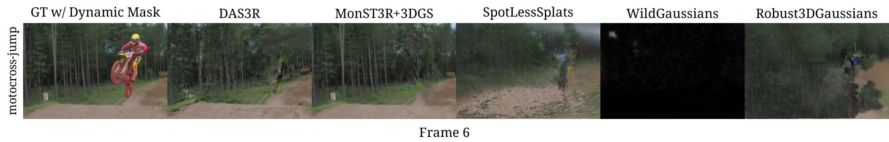
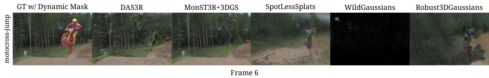

(Click left or right to view all test image comparisons.)
DAVIS: Comparisons on PSNR
Sintel: Testing Frames
 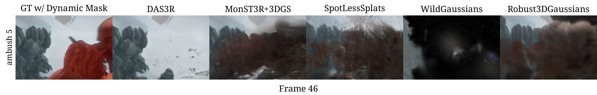
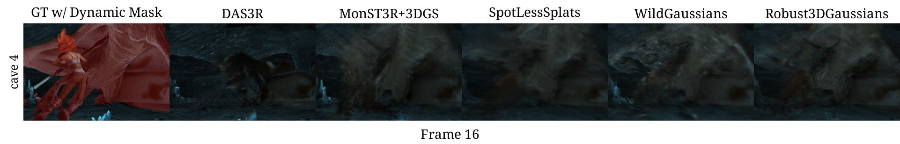
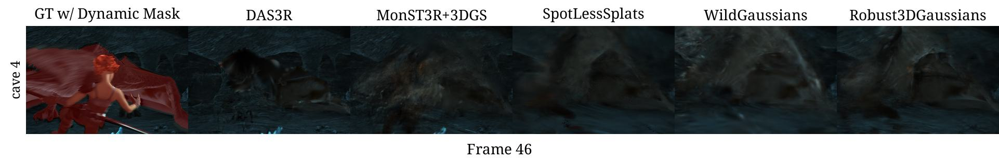
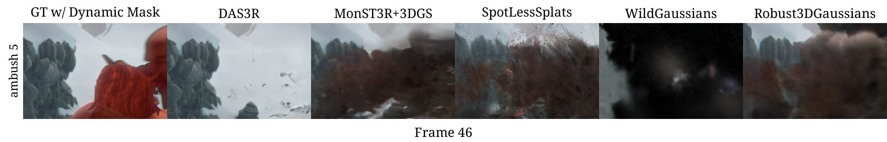
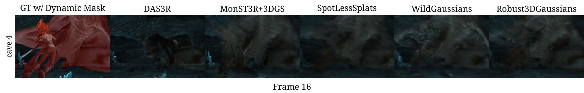
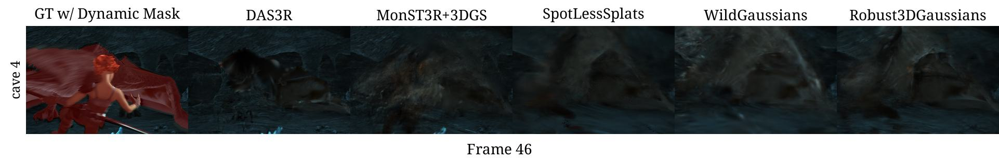

 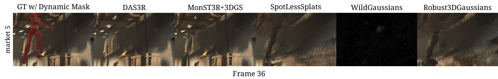
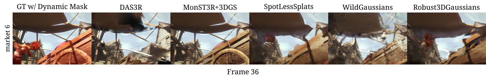
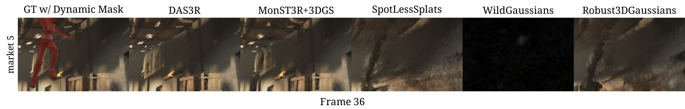
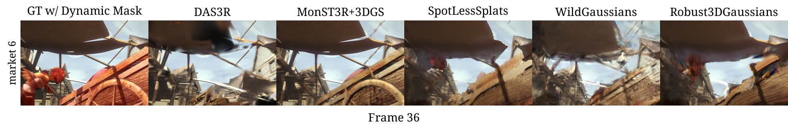


(Click left or right to view all test image comparisons.)
Sintel: Comparisons on PSNR
Dynamic Mask Prediction:
DAVIS: Dynamic Masks


(Click left or right to view all test image comparisons.)
Sintel: Dynamic Masks


 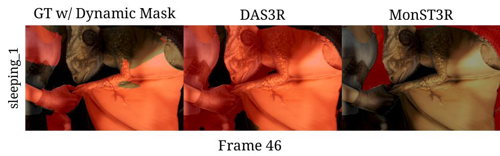
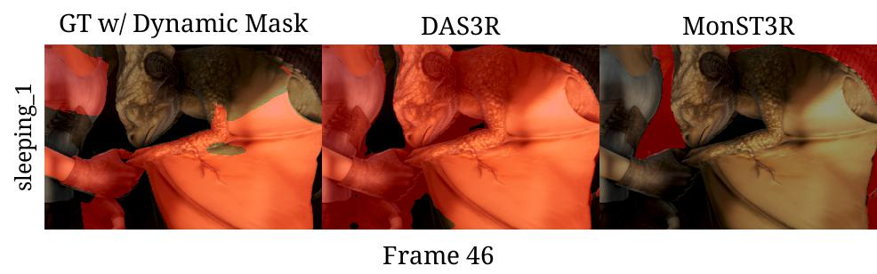


(Click left or right to view all test image comparisons.)